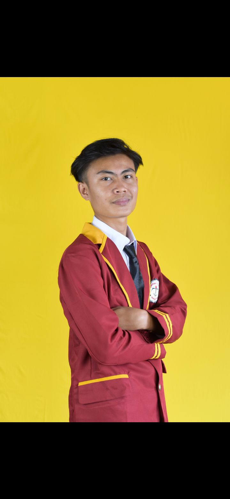

Ramma Saputra
Mahasiswa Teknik Informatika
| NPM | : 24312112 |
| TTL | : Menggala, 11-08-2006 |
| Gender | : Laki-laki |
| Hobi | : Bermain Game & Coding |
| Motivasi | : Menjadi Ahli IT Profesional |
Bahasa Pemrograman
Skill & Keahlian
Pemecahan Masalah
Bekerja Dalam Tim
Manajemen Waktu